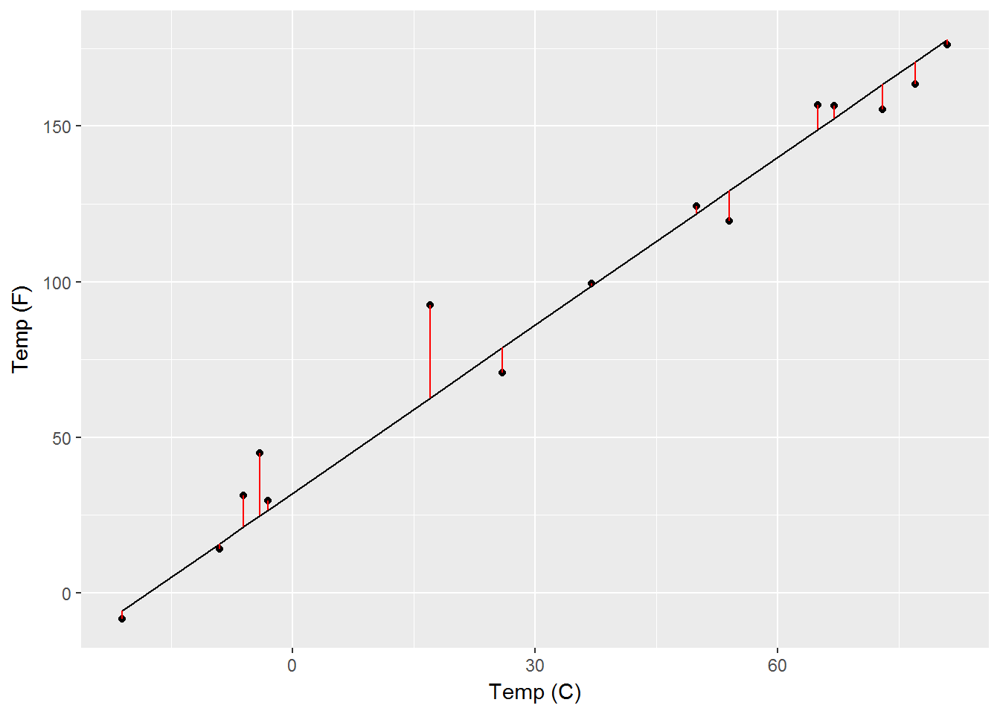

2 Linear Regression
Almst all supervised models relate one or more input variables, \(X_1,X_2, \ldots , X_p\), to an output variable, \(Y\). The general equation for a supervised model takes the form \[Y = f(X)\]. The simplest method with which to combine the inputs \(X\) is through a linear combination, namely addition. When dealing with a numerical output, we’ll deal with a different type of output in chapter NEED CHAPTER NAME, this problem is termed regression. Before tackling the general form of the model let’s take a look at the example where there is only a single input variable, termed simple linear regression. Plotted in the figure below are 5 random temperature values read from a celsius thermometer on the X axis and from a farenheit thermometer on the Y axis.

There is an obvious a linear relationship between the values on the X and Y axes, i.e., as the temperature in Celsius increases the temperature in Farenheit increases a proportional amount, and if you remember the formula to convert between the two is \(F = \dfrac{9}{5}\cdot C + 32\). Converting this formulation into our nomenclature we almost get the general formula for simple linear regression \[Y \approx a_0 + a_1 \cdot X_1\] I am writing the relationship between the input and output variables as approxiamtely, because the readings were not completely accurate. This is very easy to see if I overlay on top of the previous plot a line generated from the equation \(F = \dfrac{9}{5}\cdot C + 32\).

The red bars from the points to the line represent the distance from the real values to the measured values, also know as the error. I can rewrite the general formula for linear regression and this time include a term, \(\epsilon\) by standard notation, to represent the error. \(\epsilon\) is a variable with the same number of values as \(X\) and \(Y\), as seen in the table below
knitr::kable(tmp)| cel | frn | frn2 |
|---|---|---|
| 54.541501 | 130.17470 | 123.60889 |
| 3.477857 | 38.26014 | 48.66767 |
| -52.267340 | -62.08121 | -71.02274 |
| 38.777848 | 101.80013 | 97.68231 |
| 45.987064 | 114.77671 | 116.60301 |
| 18.918064 | 66.05252 | 68.61918 |
| 94.405064 | 201.92912 | 207.38147 |
| 26.987155 | 80.57688 | 63.35551 |
| -30.286192 | -22.51515 | -25.38810 |
| 47.310429 | 117.15877 | 102.69111 |
| 15.028121 | 59.05062 | 69.72771 |
| -49.967493 | -57.94149 | -62.96396 |
| -1.110684 | 30.00077 | 40.90162 |
| 16.362983 | 61.45337 | 66.04090 |
| 9.868674 | 49.76361 | 71.45237 |
Unlike our previous equation this time our equation (2.1) has an equals sign is the general formula for simple linear regression. When more input variables are added the simple part of the term is dropped and it is referred to as general regression and takes the form
\[\begin{equation} Y = a_0 + a_1\cdot X_1 + a_2\cdot X_2 + \ldots a_p\cdot X_p + \epsilon \tag{2.2} \end{equation}\]Hence, models which take the form are termed linear regression. Just as in simple linear regression, the \(a\)’s in front of the input variables control the slope of the line, \(a_0\) controls the intercept of the line, and \(\epsilon\) is the error as measured by the distance from the points on the right hand side to the true values on the left hand side of the equation.
You can label chapter and section titles using {#label} after them, e.g., we can reference Chapter ??. If you do not manually label them, there will be automatic labels anyway, e.g., Chapter ??.
Figures and tables with captions will be placed in figure and table environments, respectively.
par(mar = c(4, 4, .1, .1))
plot(pressure, type = 'b', pch = 19)
Figure 2.1: Here is a nice figure!
Reference a figure by its code chunk label with the fig: prefix, e.g., see Figure 2.1. Similarly, you can reference tables generated from knitr::kable(), e.g., see Table 2.1.
knitr::kable(
head(iris, 20), caption = 'Here is a nice table!',
booktabs = TRUE
)| Sepal.Length | Sepal.Width | Petal.Length | Petal.Width | Species |
|---|---|---|---|---|
| 5.1 | 3.5 | 1.4 | 0.2 | setosa |
| 4.9 | 3.0 | 1.4 | 0.2 | setosa |
| 4.7 | 3.2 | 1.3 | 0.2 | setosa |
| 4.6 | 3.1 | 1.5 | 0.2 | setosa |
| 5.0 | 3.6 | 1.4 | 0.2 | setosa |
| 5.4 | 3.9 | 1.7 | 0.4 | setosa |
| 4.6 | 3.4 | 1.4 | 0.3 | setosa |
| 5.0 | 3.4 | 1.5 | 0.2 | setosa |
| 4.4 | 2.9 | 1.4 | 0.2 | setosa |
| 4.9 | 3.1 | 1.5 | 0.1 | setosa |
| 5.4 | 3.7 | 1.5 | 0.2 | setosa |
| 4.8 | 3.4 | 1.6 | 0.2 | setosa |
| 4.8 | 3.0 | 1.4 | 0.1 | setosa |
| 4.3 | 3.0 | 1.1 | 0.1 | setosa |
| 5.8 | 4.0 | 1.2 | 0.2 | setosa |
| 5.7 | 4.4 | 1.5 | 0.4 | setosa |
| 5.4 | 3.9 | 1.3 | 0.4 | setosa |
| 5.1 | 3.5 | 1.4 | 0.3 | setosa |
| 5.7 | 3.8 | 1.7 | 0.3 | setosa |
| 5.1 | 3.8 | 1.5 | 0.3 | setosa |
You can write citations, too. For example, we are using the bookdown package [@R-bookdown] in this sample book, which was built on top of R Markdown and knitr [@xie2015].